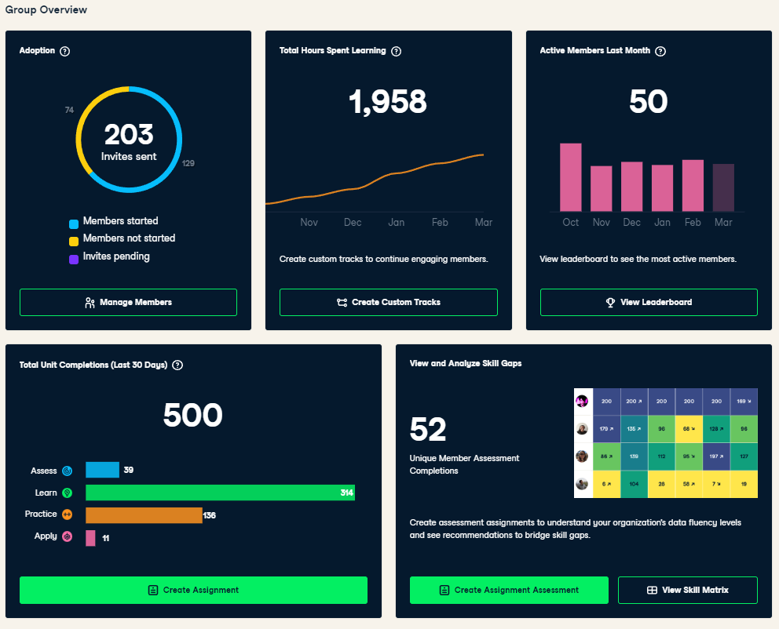

Fly, you fools!Науково-видавнича система Quarto
Мала академія наук України
Про мене
- Мірошниченко Ігор Вікторович
- кандидат економічних наук, доцент
- доцент кафедри математичного моделювання і статистики КНЕУ
- викладач Міжнародного інституту бізнесу (MBA)
DataCamp Group

DataCamp Group

DataCamp Group
Як долучитися?
- Приєднатися до телеграм-групи Data Mirosh
- Зареєструйтесь на DataCamp
- Приєднайтесь до класу за посиланням
Примітка
Клас буде діяти до 11 квітня 2023 року, після чого буде буде відкрито третій потік. Слідкуйте за оновленнями.
Quarto
Quarto
Quarto — це науково–технічна видавнича система з відкритим кодом, яка ґрунтується на універсальному конверторі документів Pandoc та використовує мову розмітки Markdown.
Це універсальний інструмент для тих, хто пише на R, Python, Julia та Observable JavaScript.
Назва
Розробники Quarto хотіли використати ім’я, яке мало деяке значення в історії видавничої справи.
Вибір пав на Quarto (від латинського quārtō, скорочено Qto, 4to або 4º) — це формат книги або брошури в одну четвертину топографічного листа.
На кожній стороні листа при цьому поміщається 4 сторінки книги (8 сторінок на один лист).

Можливості Quarto
Quarto являє собою текстовий документ спеціального формату .qmd, який можна скомпілювати у різноманітні документи:
- Документи у форматах:
- Презентації у форматах:
- reveal.js (HTML)
- PowerPoint (MS Office)
- Beamer (LaTeX/PDF)
- Веб-сторінки:
- Practical Deep Learning від fast.ai
- nbdev від fast.ai
- Курс Julia Workshop for Data Science
- Книги, приклади яких можна переглянути за посиланнями:
- Інтерактивні документи:
- Observable reactive JavaScript
- Shiny вебфреймворк
- Інтерактивні віджети Jupyter
Встановлення Quarto
Для роботи з Quarto потрібно:
Встановити інтерфейс командного рядка Quarto (CLI) під актуальну операційну систему (Windows, Linux або Mac OS).
Встановити плагін для інтегрованого середовища розробки (IDE). На даний момент підтримуються:
Робота з проектами
Створити Quarto–проект можна декількома шляхами:
- За допомогою командного рядка:
terminal
# веб-сайт
quarto create-project mysite --type website
# блог
quarto create-project myblog --type website:blog
# книга
quarto create-project mybook --type bookРобота з проектами
Створити Quarto–проект можна декількома шляхами:
- Засобами VS Code:
File -> New File -> … або Ctrl+Win+Alt+N

Робота з проектами
Створити Quarto–проект можна декількома шляхами:
- Засобами RStudio:
File -> New Project… -> New Directory 
Як працює Quarto
Спочатку Knitr (для R) або Jupyter (для Python або Julia) виконує всі фрагменти коду .qmd-файлу і створює новий markdown (.md) документ, який включає в себе код і всі його результати.
Далі .md–файл оброблюється Pandoc для перетворення у різноманітні формати файлів (HTML, PDF, Word тощо).

Рендерінг
- За допомогою кнопки Render в VS Code.

- За допомогою командного рядка:
terminal
quarto render <input> --to <format>
# Наприклад:
quarto render document.qmd --to docxСтруктура документів Quatro
Quatro документи складаються з трьох базових складових:
- YAML–шапки1
- Тексту з використанням розмітки Markdown
- Чанків (анг. chunks) з кодом
YAML–шапка
YAML–шапка знаходиться нагорі документу і відділена трьома дефісами (---) зверху та знизу.
В ній зберігається мета–інформація документу: назва, дата створення, автор, інформація щодо роботи коду, контенту і процесу рендерінгу.
---
title: "Науково-видавнича система Quarto"
subtitle: "Мала академія наук України"
author: "Ігор Мірошниченко"
date: today
date-format: iso
institute: КНЕУ::ІІТЕ
language: _language-ukr.yml
format:
revealjs:
theme: [simple, custom.scss]
logo: img/logo.png
chalkboard: true
slide-number: true
toc: true
toc-title: ЗМІСТ
transition: fade
mouse-wheel: true
highlight-style: github
mainfont: metropolis
toc-depth: 1
editor: source
execute:
echo: true
jupyter: python3
---Markdown
Ця частина документу йде одразу після YAML–шапки і складає основну частину документу.
Markdown — це популярна і зручна мова розмітки.
Ви непевно зустрічали її в README.md–файлах репозиторіїв GitHub, а також у Telegram–повідомленнях.
*Зродились ми великої години* \
**З пожеж війни і полум'я вогнів.**\
***Плекав нас біль за долю України,***\
`Зростив в нас гнів` і лють на ~~ворогів~~!Зродились ми великої години
З пожеж війни і полум’я вогнів.
Плекав нас біль за долю України,
Зростив в нас гнів і лють на ворогів!
$$ x = {-b \pm \sqrt{b^2-4ac} \over 2a} $$\[ x = {-b \pm \sqrt{b^2-4ac} \over 2a} \]
Чанки з кодом
Chunks — це блоки, які відділяються від тексту потрійними зворотніми лапками ```( анг. backtick) на початку та в кінці. У фігурних дужках вказується мова програмування на якій необхідно виконати код.
```{python}
print('Fly, you fools!')
```Результат чанку за замовчування виводиться одразу після нього, але все це можна налаштувати.
import numpy as np
import pandas as pd
import matplotlib.pyplot as plt
x = np.arange(-4, 4, .012)
y = np.arange(-4, 4, .012)
X, Y = np.meshgrid(x, y)
Z = 1 - np.abs(X) - np.sin(Y**2)
W = 1 + Y - np.cos(X**2)
fig = plt.figure(figsize=(4, 4))
ax = fig.add_subplot(projection='polar')
plt.scatter(Z, W, alpha=.03, s=0.2)
plt.axis('off')
plt.show()
Чанки з кодом
from ipyleaflet import Map, Marker, basemaps, basemap_to_tiles
m = Map(
center=(50.46361774858406, 30.460139871139447),
zoom=15
)
m.add_layer(Marker(location=(50.46361774858406, 30.460139871139447)))
mЧанки з кодом

from palmerpenguins import load_penguins
df = load_penguins()
df| species | island | bill_length_mm | bill_depth_mm | flipper_length_mm | body_mass_g | sex | year | |
|---|---|---|---|---|---|---|---|---|
| 0 | Adelie | Torgersen | 39.1 | 18.7 | 181.0 | 3750.0 | male | 2007 |
| 1 | Adelie | Torgersen | 39.5 | 17.4 | 186.0 | 3800.0 | female | 2007 |
| 2 | Adelie | Torgersen | 40.3 | 18.0 | 195.0 | 3250.0 | female | 2007 |
| 3 | Adelie | Torgersen | NaN | NaN | NaN | NaN | NaN | 2007 |
| 4 | Adelie | Torgersen | 36.7 | 19.3 | 193.0 | 3450.0 | female | 2007 |
| ... | ... | ... | ... | ... | ... | ... | ... | ... |
| 339 | Chinstrap | Dream | 55.8 | 19.8 | 207.0 | 4000.0 | male | 2009 |
| 340 | Chinstrap | Dream | 43.5 | 18.1 | 202.0 | 3400.0 | female | 2009 |
| 341 | Chinstrap | Dream | 49.6 | 18.2 | 193.0 | 3775.0 | male | 2009 |
| 342 | Chinstrap | Dream | 50.8 | 19.0 | 210.0 | 4100.0 | male | 2009 |
| 343 | Chinstrap | Dream | 50.2 | 18.7 | 198.0 | 3775.0 | female | 2009 |
344 rows × 8 columns
Чанки з кодом
import plotly.express as px
import plotly.io as pio
from palmerpenguins import load_penguins
df = load_penguins()
fig = px.scatter(df, x="flipper_length_mm", y="body_mass_g",
color="species",
marginal_y="violin", marginal_x="box",
trendline="ols", template="simple_white")
fig.show()Дякую за увагу!
Зноски
YAML це рекурсивний акронім YAML Ain’t Markup Language («YAML — не мова розмітки»). У назві відображена історія розвитку: на ранніх етапах мова називалася Yet Another Markup Language («Ще одна мова розмітки») і навіть розглядалася як конкурент XML, але пізніше була перейменована з метою акцентувати увагу на даних, а не на розбивці документів.↩︎